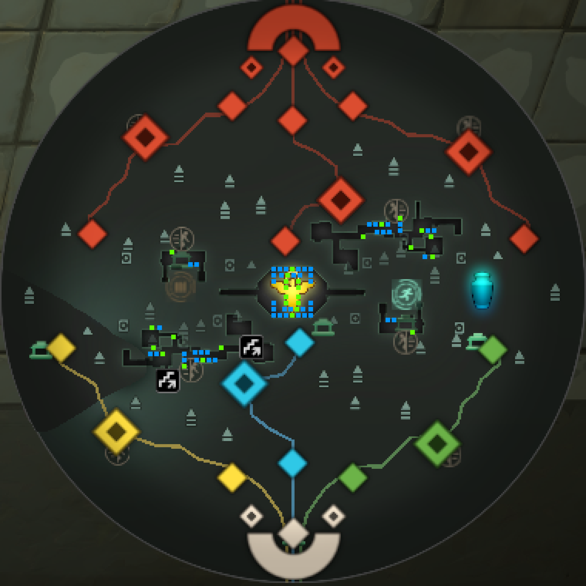
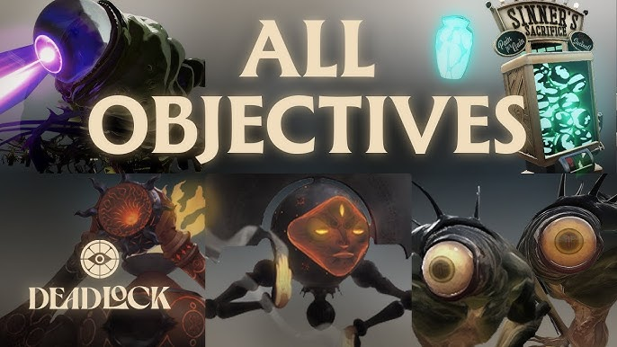

What is Deadlock?
Deadlock is a multiplayer team-based game by Valve that combines shooter gameplay with strategic MOBA elements. Players choose unique heroes and work together to control the map, fight opponents, and complete objectives. The goal is to outplay the opposing team through teamwork and strategy to win the match.
Laning Phase

alt="Deadlock game map showing the three lanes: Greenwich in green, Broadway in blue, and York in yellow" class="lane-map img-fluid mb-3">There are three main lanes:
- Greenwich (Green)
- Broadway (Blue)
- York (Yellow)
At the start of the match, six players are divided into three lanes in teams of two. Each duo eliminates enemy bots to earn money and experience while fighting opposing heroes. The goal of the laning phase is to build resources, protect structures, and create advantages for the mid game.
Game Objectives
Objectives are key structures and points on the map that teams fight to control. Capturing or destroying them gives advantages like map control and resources.
Main Objectives
- Patron: The final boss located in the enemy base.
- Guardians: First defensive structures in each lane.
- Walkers: Second defensive structures in each lane.
- Defenders: Smaller automated defensive units.
- Troopers: Basic lane minions.
Bonus Objectives
- Mid Boss: Neutral boss that provides buffs.
- Urn: Special objective that grants team-wide souls.

alt="Deadlock objective structures including Patron, Guardians, and Walkers" class="obj-img img-fluid">